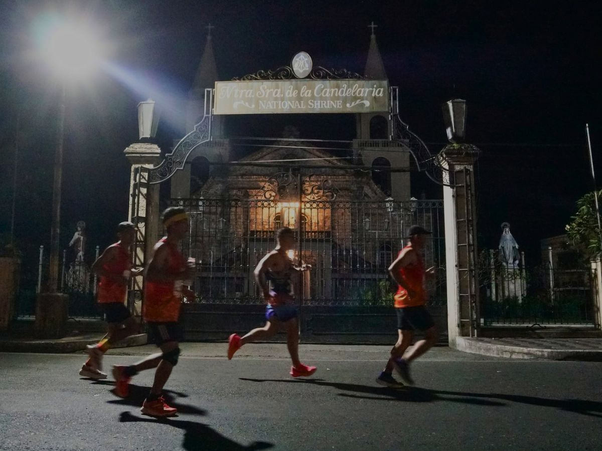

THE HERITAGE EXPERIENCE
The Official Marathon of the Dinagyang Festival
The Iloilo Dinagyang Marathon – Heritage Run 4, organized by Velocity 5000, is Iloilo City's flagship road running festival celebrating fitness, culture, and heritage.
Inspired by the vibrant spirit of the Dinagyang Festival, runners will experience a scenic journey through historic landmarks and modern attractions while enjoying the warmth and hospitality of the Ilonggo community.
Featuring race categories of 5K, 10K, 21K Half Marathon, 42K Full Marathon, Heritage Run welcomes beginners, recreational runners, and seasoned marathoners alike.
CHOOSE YOUR DISTANCE
Whether you're taking your first steps into road running or aiming to conquer a full marathon, Heritage Run 4 offers a race category for every runner.
Fun Run
Perfect for beginners, families, and first-time runners seeking a fun Heritage Run experience.
Bib • Singlet • Medal
Gun Start 5:00 AM
Road Race
A great challenge for runners looking to build endurance and improve their pace.
Bib • Singlet • Finisher Shirt • Medal
Gun Start 4:00 AM
Half Marathon
Experience the signature Heritage Run course across the classic half marathon distance.
Bib • Singlet • Finisher Shirt • Medal
Gun Start 3:00 AM
Full Marathon
Conquer the ultimate Heritage Run challenge over the full 42.195-kilometer marathon.
Bib • Singlet • Finisher Shirt • Medal
Gun Start 12:00 AM
AWARDS & RECOGNITION
Heritage Run 4 recognizes outstanding performances across all race distances through Overall Champion and Age Group awards.
Top 3 Male and Top 3 Female finishers for each race distance.
Top 3 Male and Top 3 Female finishers in every age group across all race distances.
Overall Winners are no longer eligible for Age Group Awards. Once a runner places in the Overall Top 3 of their race distance and gender, they will be excluded from Age Group rankings.
ROUTE MAPS
Every route has been carefully designed to showcase the rich heritage, iconic landmarks, and vibrant streets of Iloilo City. Official route maps will be released soon.
Perfect for beginners and families looking to enjoy the Heritage Run experience.
Discover more of Iloilo City's scenic roads while building endurance and speed.
Experience the signature Heritage Run course through Iloilo's historic districts and major landmarks.
The complete Heritage Run challenge featuring the best of Iloilo City from start to finish.
EVENT SCHEDULE
Stay informed with the important dates leading up to race day. Final venues and schedules will be announced through our official channels.
12:00 NN – 9:00 PM
Onsite Registration
(Venue TBA)
November 30 • 11:59 PM
Online Registration Closes
10:00 AM – 9:00 PM
Race Expo Opens
(Venue TBA)
10:00 AM – 9:00 PM
Race Kit Claiming
10:00 AM – 9:00 PM
Race Kit Claiming
(Venue TBA)
12:00 NN – 3:00 PM
Final Race Kit Claiming
(Venue TBA)
1:00 PM
Technical Briefing
9:00 PM onwards
Race Kit Claiming Continues at the Race Venue
(Venue TBA)
12:00 AM — 42K Gun Start
3:00 AM — 21K Gun Start
4:00 AM — 10K Gun Start
5:00 AM — 5K Gun Start
8:00 AM — Awards Ceremony
Schedule is subject to change. Final venues, race activities, and event schedules will be announced through the official Heritage Run 4 website and Facebook page.
RUNNER'S GUIDE
Find answers to the most common questions about registration, race weekend, and participant guidelines.
Registration is available exclusively through our official Veent Registration Portal. Simply complete the online registration, select your preferred payment method, and follow the on-screen instructions to confirm your slot.
Online registration is open until
November 30, 2026 at 11:59 PM.
We encourage all participants to register early to enjoy
available promotional rates and to allow sufficient time
for race preparations.
Heritage Run 4 offers four race categories:
• 5K Fun Run
• 10K Road Race
• 21K Half Marathon
• 42K Full Marathon
Your registration includes:
• Official Race Bib
• Official Event Singlet
• Sponsor Giveaways (if available)
Finisher Medals and Finisher Shirts (eligible categories)
are awarded only upon successfully completing the race.
The official Start and Finish venue will be announced at a later date. Please follow our official Facebook page and regularly visit this website for updates.
Race Kit Claiming will be held from
January 13–16, 2027.
The complete venue and claiming guidelines will be
announced through our official Facebook page and website.
Yes. Your representative must present:
• Signed Authorization Letter
• Copy of your Valid ID
• Representative's Valid ID
• Registration Confirmation
Registration transfers may be allowed before the announced deadline, subject to organizer approval. Applicable fees may apply.
Category changes are subject to slot availability and may require payment of the registration fee difference. Requests beyond the announced deadline cannot be accommodated.
Registration fees are non-refundable. Please ensure that you have selected the correct race category before completing your registration.
Yes. Hydration stations, medical teams, ambulances, and emergency responders will be available throughout the race course.
Yes. A baggage deposit area will be available near the Start/Finish Area for registered participants. The organizer is not responsible for valuables placed inside baggage.
Yes. All official finishers who complete the race within the prescribed rules and cutoff time will receive an Official Finisher Medal.
The official race routes and course maps will be published on our website and official Facebook page prior to race day.
We recommend staying within Iloilo City Proper for convenient access to the race venue, restaurants, and transportation. Recommended partner hotels will be announced soon.
Absolutely! Heritage Run 4 welcomes runners of all nationalities to experience Iloilo City's premier marathon event.
Follow the official Heritage Run 4 Facebook page and visit this website regularly for announcements, schedules, race guides, route maps, and other important event updates.